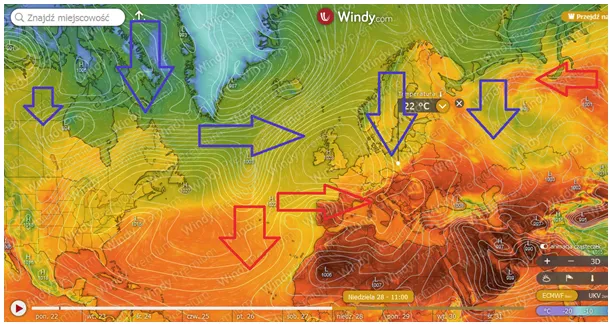
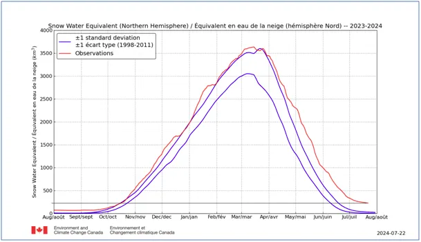

Nie płacz Greta, bo tu sensu brak!
Tak za tydzień mają wyglądać cyrkulacje w naszej synoptycznej okolicy. Temperatura gwałtownie spadnie o 10 st. C. z 30 na 20 i nocami znacznie poniżej 15 st. C, co przyniesie sporo rosy.

Dzień już będzie godzinę krótszy niż pod koniec czerwca. W Arktyce mamy 200 tys. km^3 wody uwięzionej w śniegu, która zwykle o tej porze była już w oceanach. Zimowy poziom to 3 500 km^3 wody zgromadzonej jako śnieg w Arktyce. Żeby sobie to wyobrazić musimy wyciągnąć z 3500 pierwiastek 3 stopnia: 3500^(1/3) = 15.18 Co mamy? Kostkę wody o wymiarach 15x15x15 km, lód będzie większy, bo się rozszerzy. Kwadrat 15x15 km to jest cała Warszawa, ale teraz najciekawsze, bo nasza wyobraźnia nie obejmuje takich obszarów. Ta kostka ma wysokość 15 km! Pałac Kultury ma 0,188 km. Nasze Tatry to 2,5 km, Himalaje mają 8,8 km wysokości, samoloty cywilne latają na 9-10 km, na 15 km i wyżej latają wojskowe odrzutowce, 6 razy dalej jest kosmos...

Antarktyda jest bardzo wysokim kontynentem lodowym i ma maksymalnie blisko 5 km wysokosci, ale najwyższe klify przy brzegach to ledwo setki metrów. Aby poznać miarę świata to zważmy, że człowiek który ma oczy na wysokości 175 cm postrzega horyzont o zaledwie 4,7 km przed sobą.

Żeby widzieć na 15 km trzeba wejść na wieżę wysoką na 7 pięter. Taka kostka wody co roku odparowuje z oceanów, żeby leżeć pół roku w Arktyce jako śnieg i poziom oceanów nie zmienia się o milimetr... Nie płacz Gerta! Było trzeba do szkoły chodzić, a nie na manify.
Paweł Klimczewski